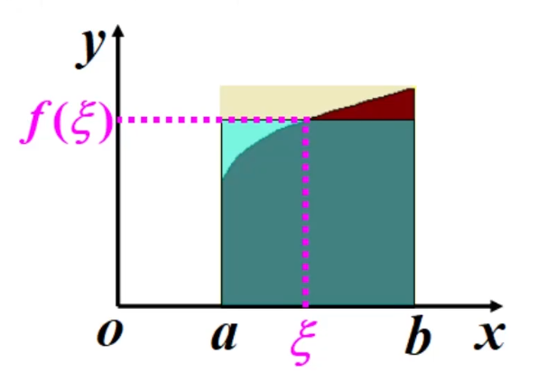
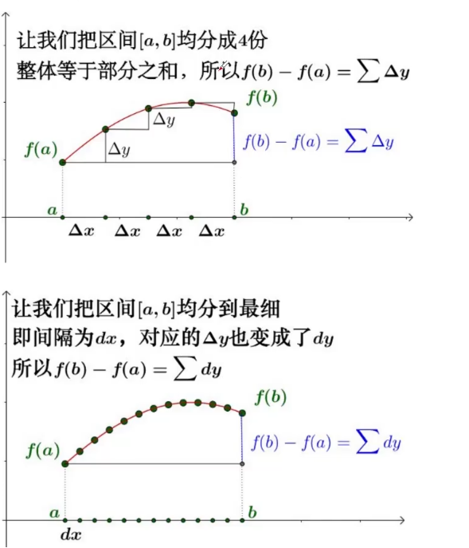
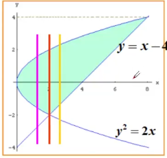

0 Introduction
0.1 Origins
Calculus was born in the 17th century, mainly to help people solve practical problems about speed, area and so on.
0.2 The basic idea
- Use the straight to stand in for the curved: the area of a rectangle is easy, so can a rectangle stand in for a curved shape?
- And how many rectangles should we use?
1 What calculus is doing
1.1 Where area comes from
- Insert several points into the interval $[a,b]$, giving $n$ small subintervals.
- Each small rectangle has area $A_i=f(\xi_i)\Delta x_i$, so the area under the curve is approximately $A\approx \sum_{i=1}^n f(\xi_i)\Delta x_i$.
- Refine the partition without limit; let $\lambda$ be the largest subinterval length, then $\lambda \to 0$.
- The area under the curve: $A=\lim_{\lambda \to 0}\sum_{i=1}^n f(\xi_i) \Delta x_i$.
![Cutting the interval [a,b] into n small rectangles to approximate the area under the curve](calc-20261126175355.png)
1.2 Starting from sums
- Make the base of every rectangle as small as possible.
- To convey the feeling of summing, Leibniz stretched the $S$ and wrote it as $\int_{a}^{b} f(x)\,dx$.

That is: stretch the first letter $S$ of Sum into $\int$, and the summation sign becomes the integral sign.
1.3 The tangent view
- What is the slope of the tangent?
Example: the right triangle formed by $dy$ and $dx$ has the tangent as its hypotenuse, and the slope of the tangent is the derivative, so $f'(x)=\frac{dy}{dx}$, hence $dy=f'(x)dx$.
- Because of the notion of infinitesimals, both $dx$ and $dy$ are called differentials. “Calculus” is literally putting these differentials together.
1.4 Differentials

$$\lim_{\Delta x \to 0}dy=0,\quad \lim_{\Delta x \to 0}dx=0$$
2 Definite integrals
2.1 Definition
When $\| \Delta x \| \to 0$ and the sum $S$ always tends to a definite limit $I$, that limit $I$ is called the definite integral of $f(x)$ over $[a,b]$.

2.2 Properties
- The value of a definite integral depends only on the integrand and the interval $[a,b]$, not on the letter used for the variable of integration.
$$ \int_a^bf(x)dx=\int_a^bf(t)dt=\int_a^bf(u)du $$
- When the definite integral of $f(x)$ over $[a,b]$ exists, $f(x)$ is said to be integrable on $[a,b]$.
- Sufficient conditions: a function continuous on a closed interval is always integrable; a bounded function with finitely many discontinuities of the first kind is also integrable.
2.3 Computing a definite integral from the definition
Example: compute $\int_0^1x^2dx$.
Divide $[0,1]$ into $n$ equal parts with division points $x_i=\frac{i}{n}\ (i=1,2,…,n)$; each subinterval $[x_{i-1},x_i]$ has length $\Delta x_i = \frac{1}{n}$; take $\xi_i=x_i$.
$$ \sum_{i=1}^nf(\xi_i)\Delta x_i=\sum_{i=1}^n\xi_i^2\Delta x_i=\sum_{i=1}^nx_i^2\Delta x_i =\sum_{i=1}^n\left(\frac{i}{n}\right)^2 \cdot \frac{1}{n^3} =\frac{1}{n^3}\sum_{i=1}^ni^2=\frac{1}{n^3} \cdot \frac{n(n+1)(2n+1)}{6} $$
$$ =\frac{1}{6}\left(1+\frac{1}{n}\right)\left(2+\frac{1}{n}\right) $$
Since $\| \Delta x \| \to 0 \Rightarrow n \to \infty$:
$$ \int_0^1x^2dx=\lim_{\lambda \to 0}\sum_{i=1}^n\xi_i^2\Delta x_i =\lim_{n \to \infty}\frac{1}{6}\left(1+\frac{1}{n}\right)\left(2+\frac{1}{n}\right)=\frac{1}{3} $$
3 Properties of definite integrals
3.1 Basic properties
Linearity:
$$\int_a^b \bigl[f(x)\pm g(x)\bigr]\,dx = \int_a^b f(x)\,dx \pm \int_a^b g(x)\,dx$$
$$\int_a^b k f(x)\,dx = k\int_a^b f(x)\,dx \qquad (k \text{ is constant})$$
Additivity over intervals (assuming $a<c<b$):
$$\int_a^b f(x)\,dx = \int_a^c f(x)\,dx + \int_c^b f(x)\,dx$$
Sign preservation: if $f(x)\ge 0$ on $[a,b]$, then
$$\int_a^b f(x)\,dx \ge 0 \qquad (a<b)$$
3.2 First mean value theorem
If $f(x)$ is continuous on the closed interval $[a,b]$, then there is at least one point $\xi$ in $[a,b]$ such that $\int_a^bf(x)dx=f(\xi)(b-a)\ \ (a \le \xi \le b)$.

3.3 The upper-limit function
- If $f(x)$ is continuous on $[a,b]$, then for the definite integral $\int_a^xf(t)dt$ every value of $x$ gives a corresponding value of the integral.
- Write it as $\Phi(x)=\int_a^xf(t)dt$.
- If $f(x)$ is continuous on $[a,b]$, this upper-limit function is an antiderivative of $f(x)$ on $[a,b]$.
- In derivative form (the first fundamental theorem of calculus): $\Phi'(x)=f(x)$.
- Intuition: $\Phi(x)$ is the area “from $a$ up to $x$”; nudging $x$ to the right adds a thin strip of area roughly $f(x)\,dx$, so the rate of growth is $f(x)$.
4 The Newton–Leibniz formula
4.1 Definition
- If $F(x)$ is an antiderivative of the continuous function $f(x)$ on $[a,b]$, then
$$ \int_a^bf(x)dx=F(b)-F(a) $$
- Reading: the definite integral of a continuous function over $[a,b]$ equals the increment of any one of its antiderivatives over $[a,b]$.
4.2 Geometric meaning

We get:
$$ F(b)-F(a)=\sum dy $$
Since $dy=f'(x)dx$:
$$ f(b)-f(a)=\sum f'(x)dx = \int_a^b f'(x)dx $$
4.3 Computations
Example: $$\int_0^\frac{\pi}{2}(2\cos x+\sin x-1)dx$$
First question:
$$\text{expression}=\left[2\sin x -\cos x -x\right]_0^{\frac{\pi}{2}}=3-\frac{\pi}{2}$$
Second question: let $f(x)=\begin{cases}2x &0 \le x \le 1, \\ 5 &1 < x \le 2\end{cases}$; find $\int_0^2f(x)dx$.
On $[1,2]$ take $f(x)=5$ at $x=1$:
$$\text{expression}=\int_0^12xdx+\int_1^25dx=1+5=6$$

4.4 The fundamental formula of calculus
$$ \text{given } f(x) \in C[a,b], \text{ and } F'(x) = f(x) $$
$$ \int_a^b f(x)\,\mathrm{d}x = \underbrace{f(\xi)(b-a)}_{\color{#FFC107}{\text{mean value theorem}}} = \underbrace{F'(\xi)(b-a)}_{\color{#FFC107}{\text{Lagrange MVT}}} = F(b) - F(a) $$
Example: find the area enclosed by the curve $y^2=2x$ and the line $y=x-4$.
First find the intersection points of the two curves:
$$ \begin{cases}y^2=2x \\ y=x-4 \end{cases} \Rightarrow (2,-2),\ (8,4) $$
Take $y$ as the variable of integration, $y \in [-2,4]$:
$$ dA=\left(y+4-\frac{y^2}{2}\right)dy,\qquad A=\int_{-2}^4dA=18 $$

5 How this connects to d2l
The differential part of this note is the main line of deep learning; the integral part is used less, but you should recognise it.
| Concept | In d2l |
|---|---|
| Derivative | Gradients, backpropagation (B04, B11) |
| Gradient | The direction of gradient descent (B06, B25) |
| Integral (probability) | $P(a<X<b)=\int_a^b p(x)\,\mathrm{d}x$ for continuous distributions |
| Integral (expectation) | $\mathbb{E}[X]=\int x\,p(x)\,\mathrm{d}x$ |
The whole thing in one line
- Differential answers “how fast”: derivative → gradient → backpropagation → parameter update.
- Integral answers “how much in total”: area → accumulated quantity → probability and expectation.
- The fundamental theorem links the two: integration is the inverse of differentiation.
6 Worked examples
Four computations, taken apart step by step, with the reason for each move.
6.1 Using the definition on $\int_0^1 x^2\,\mathrm{d}x$
Idea: skip the formula, start from “area = sum of small rectangles” and take the limit.
Step 1: partition
Divide $[0,1]$ into $n$ equal parts, division points $x_i=\dfrac{i}{n}$ ($i=0,1,\dots,n$).
The interval has length 1, so each part has length $1/n$, and the $i$-th division point sits at $i/n$. Each subinterval has length $\Delta x_i=1/n$.
Step 2: choose sample points
Pick any point $\xi_i$ in each subinterval; here take the right endpoint $\xi_i=x_i=i/n$.
Any point is allowed because the definition of the definite integral requires “any choice of points gives the same limit”. Taking right endpoints just makes the algebra tidy.
Step 3: sum the small rectangle areas
$$\sum_{i=1}^n f(\xi_i)\Delta x_i=\sum_{i=1}^n\left(\frac{i}{n}\right)^2\cdot\frac{1}{n}$$
Height $f(\xi_i)=\xi_i^2=(i/n)^2$, times base $1/n$, gives one small rectangle.
Step 4: simplify
$$\left(\frac{i}{n}\right)^2\cdot\frac{1}{n}=\frac{i^2}{n^3}\quad\Rightarrow\quad \text{sum}=\frac{1}{n^3}\sum_{i=1}^n i^2$$
Step 5: plug in the sum-of-squares formula
$$\sum_{i=1}^n i^2=\frac{n(n+1)(2n+1)}{6}$$
This is the key step: the sum has to become an expression in $n$ before the limit can be taken.
Step 6: rearrange
$$\frac{1}{n^3}\cdot\frac{n(n+1)(2n+1)}{6}=\frac{(n+1)(2n+1)}{6n^2}=\frac{1}{6}\left(1+\frac{1}{n}\right)\left(2+\frac{1}{n}\right)$$
Factor one $n$ out of numerator and denominator: $\frac{n+1}{n}=1+\frac1n$, $\frac{2n+1}{n}=2+\frac1n$.
Step 7: take the limit
As $n\to\infty$, $1/n\to0$:
$$\frac{1}{6}(1+0)(2+0)=\frac{1}{3}$$
Check: Newton–Leibniz gives $\int_0^1x^2dx=\frac{x^3}{3}\Big|_0^1=\frac13$ — consistent.
6.2 $\int_0^{\pi/2}(2\cos x+\sin x-1)\,\mathrm{d}x$
Step 1: find the antiderivative term by term
| Integrand | Antiderivative | Why |
|---|---|---|
| $2\cos x$ | $2\sin x$ | $(\sin x)'=\cos x$ |
| $\sin x$ | $-\cos x$ | $(-\cos x)'=\sin x$ |
| $-1$ | $-x$ | $(-x)'=-1$ |
Antiderivative: $2\sin x-\cos x-x$.
Step 2: substitute the upper limit $\pi/2$
$$2\sin\frac{\pi}{2}-\cos\frac{\pi}{2}-\frac{\pi}{2}=2\cdot1-0-\frac{\pi}{2}=2-\frac{\pi}{2}$$
Step 3: substitute the lower limit $0$
$$2\sin0-\cos0-0=0-1-0=-1$$
Step 4: upper minus lower
$$\left(2-\frac{\pi}{2}\right)-(-1)=3-\frac{\pi}{2}$$
Common mistake: the whole lower value is subtracted; here that value is $-1$, so it becomes $+1$.
6.3 A piecewise function: $\int_0^2f(x)\,\mathrm{d}x$
$f(x)=2x$ ($0\le x\le1$), $f(x)=5$ ($1<x\le2$).
Step 1: split at the boundary point
$$\int_0^2=\int_0^1+\int_1^2$$
Step 2: use the right expression on each piece
$$\int_0^1 2x\,\mathrm{d}x=\left[x^2\right]_0^1=1-0=1$$
$$\int_1^2 5\,\mathrm{d}x=5\cdot(2-1)=5$$
Integral of a constant function = constant × length of the interval.
Step 3: add
$$1+5=6$$
About $x=1$: the value at a single point does not affect the integral (its area is 0), so it may be assigned to either piece.
6.4 The area enclosed by $y^2=2x$ and $y=x-4$
Step 1: find the intersection points
Substitute $x=y+4$ into $y^2=2x$:
$$y^2=2(y+4)=2y+8\quad\Rightarrow\quad y^2-2y-8=0\quad\Rightarrow\quad (y-4)(y+2)=0$$
$y=4$ or $y=-2$, giving the intersection points $(8,4)$ and $(2,-2)$. The interval of integration is fixed by these points.
Step 2: take $y$ as the variable of integration, $y\in[-2,4]$.
Why $y$: integrating with respect to $x$ means the right boundary “changes line” (a piece of the parabola plus a piece of the line), so the region must be split. Integrating with respect to $y$, the right boundary is always the line $x=y+4$ and the left boundary is always the parabola $x=y^2/2$ — one expression suffices.
Step 3: the area element (right minus left)
$$\mathrm{d}A=\left[(y+4)-\frac{y^2}{2}\right]\mathrm{d}y$$
At height $y$: right side $x=y+4$, left side $x=y^2/2$; the difference of the $x$-coordinates is the width of the strip.
Step 4: integrate
$$A=\int_{-2}^{4}\left(y+4-\frac{y^2}{2}\right)\mathrm{d}y$$
Step 5: find the antiderivatives
| Term | Antiderivative |
|---|---|
| $y$ | $y^2/2$ |
| $4$ | $4y$ |
| $-y^2/2$ | $-y^3/6$ |
Step 6: substitute the upper limit $y=4$
$$\frac{16}{2}+16-\frac{64}{6}\approx 13.333$$
Step 7: substitute the lower limit $y=-2$
$$\frac{4}{2}-8-\frac{(-2)^3}{6}=2-8+\frac{8}{6}\approx -4.667$$
Step 8: subtract
$$13.333-(-4.667)=18$$
Common mistake: in the lower-limit evaluation of the $y^3/6$ term, $(-2)^3=-8$ and there is a minus sign in front, so $-\frac{-8}{6}=+\frac{8}{6}$. The sign is easy to get wrong.
6.5 What the four examples have in common
| Example | Method | Key move |
|---|---|---|
| 6.1 | From the definition | Sum → sum-of-squares formula → limit |
| 6.2 | Newton–Leibniz | Antiderivative term by term → evaluate and subtract |
| 6.3 | Split the interval | Split at the boundary point, use each expression |
| 6.4 | Area | Find intersections → choose the variable → right minus left |
If you like this blog or find it useful for you, you are welcome to comment on it. You are also welcome to share this blog, so that more people can participate in it. If the images used in the blog infringe your copyright, please contact the author to delete them. Thank you !